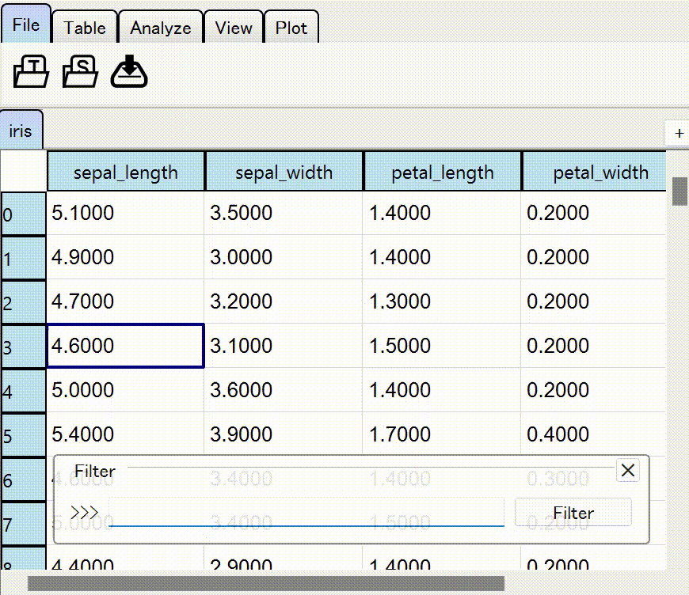

Filter Table Data¶
You can apply a filter to a table without converting the internal data.
Apply Filters Programmatically¶
You only have to set a function that maps a DataFrame to a 1-D boolean array to
the property filter. For instance, following code
table.filter = lambda df: df["label"] == "A"
is essentially equivalent to slicing a DataFrame with df[df["label"] == "A"].
If the table is
A |
label |
|
0 |
2 |
A |
1 |
3 |
B |
2 |
6 |
B |
3 |
4 |
A |
then it looks like following after applying the filter.
A |
label |
|
0 |
2 |
A |
3 |
4 |
A |
Use Query-style Filtering¶
You can open a overlay dialog to filter the table data from the  button in the toolbar,
push key combo
button in the toolbar,
push key combo Alt, A, 3, or right click on the tab.
In this widget you have to specify a query-style expression to apply the filter. For details, see the API reference of pandas.eval. The line edit for filter expression supports auto-completion (Tab) and history browsing (↑, ↓).
